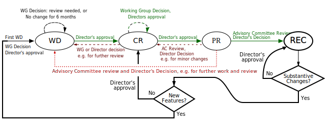
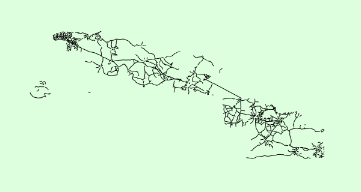

SVG accessibility
Graphical Web, November 2016
Léonie Watson, TPG
Chaals McCathie Nevile, Yandex/Яндекс
Themes
- Background
- Graphics
- Animation, CSS
- Keyboards: links,
tabindex
- Semantics:
text, title, desc
use, ARIA 1.0- ARIA graphics module…
SVG in browsers
- CSS
background-image
- Just a picture
- Embedded as
img
- Only HTML:
alt and longdesc
- Stand-alone SVG
- Nothing in IE or Edge
- HTML with SVG code inline
- As good as it gets?
What works?
- Zoom and pan*
- fonts*, links*
- Top level
title
- Tooltips for
<title>…</title>
- ARIA*,
tabindex*
* Sort of, most places…
Allow zoom/pan

Use onzoom, currentScale
(nonscalable units may work one day)
SVG animation
 Heating ice…
Heating ice…
- Press the heat button…
- …temperature rises to zero
- …ice melts. Temperature at zero
- …water temperature rises…
But labelling needs JS :(
Using CSS
Help people focus on what matters
Use links…

Don't work in Safari ;(
Use tabindex
Navigable - soon in Mac Firefox?
Use text
- Labels can be navigated, searched
- Use fonts, not
path
title and desc
- First
title is available
- Provide a
desc for the image
- Enable exploration
This needs aria tagging :(
Making title/desc work
<g aria-labelledby="mytitle"
aria-describedby="mydesc">
<title id="mytitle">Key component</title>
<desc id="mydesc">Pre-mixed tomato juice,
pepper, celery salt and chili</desc>
...
</g>
Use use
- Contextual title - and a general one?
- Put a
desc in the definition
<g id="aDef"><title id="def-title"…
[…]
<use aria-labelledby="myName def-title"…>
<title id="myName">Red
ARIA helps screenreaders
role="img" for atomic stuff
especially with text elements insiderole={list,listitem}aria-live and friends- tabular data charts as tables
role="heading" aria-level={1…6}
Interactive controls, as per HTML (watch video)
"more or less"
title, desc mostly need aria
- SVG Animation and Microsoft: Sigh
- Links, except internal links in Safari
tabindex works except Mac Firefox- Keyboard
click,
animate with accesskey are unreliable:
use JS key events :(
aria-flowto would be great. But mostly doesn't work